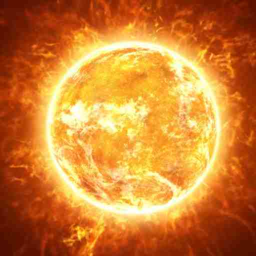

The Sun
Solar System Sun Mercury Venus Earth Mars Jupiter Saturn Uranus Neptune Pluto

Definition
The Sun (or Sol), is the star at the centre of our solar system and is responsible for the Earth's climate and 
weather. The Sun is an almost perfect sphere with a difference of just 10km in diameter between the poles
and the equator. The average radius of the Sun is 695,508 km (109.2 x that of the Earth) of which 20-25% is
the core.
Facts
-At its centre the Sun reaches temperature of 15 million degrees Celsius.
-The Sun is all the colours mixed together, this appears white to our eyes.
-The Sun is mostly composed of hydrogen (70%) and Helium (28%).
-The Sun is a main-sequence G2V star (or Yellow Dwarf).
-The Sun is 4.6 billion years old.
-The Sun is 109 times wider than the Earth and 330,000 times as massive.
-One million Earths could fit inside the Sun.
-The Sun contains 99.86% of the mass in the Solar System.
-The Sun is an almost perfect sphere.
-The temperature inside the sun can reach 15 million degrees Celsius.
-Eventually, the Sun will consume the Earth.
-The Sun will one day be about the size of the Earth.
-Light from the Sun takes eight minutes to reach Earth.
-The Sun travels at 220 kilometres per second.
-The distance from the Sun to Earth changes throughout the year. 
-The Sun is middled-aged.
-The Sun has a very strong Magnetic feild.
-The Sun generates solar wind.
Profile
Age :4.6 Billion Years
Type :Yellow Dwarf (G2V)
Diameter :1,392,684 km
Equitorial Circumference :4,370,005.6 km
mass :1.99 x 10a30 kg (333,060 Earths)
Surface Temperature :5,500 degrees Celsius